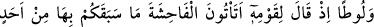
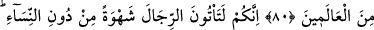
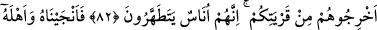
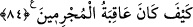

LÛT ALEYHİSSELÂM
VE KAVMİ
80. Lût’u da (peygamber gönderdik). Kavmine dedi ki: “Sizden önceki
milletlerden hiçbirinin yapmadığı fuhşu mu yapıyorsunuz?
81. Çünkü siz, şehveti tatmin için kadınları bırakıp da şehvetle erkeklere
yanaşıyorsunuz. Doğrusu siz taşkın bir milletsiniz.”
82. Kavminin cevabı: Onları (Lût’u ve taraftarlarını) memleketinizden çıkarın;
çünkü onlar fazla temizlenen insanlarmış! demelerinden başka bir şey olmadı.
83. Biz de onu ve karısından başka aile efradını kurtardık; çünkü karısı geride
kalanlardan (kâfirlerden) idi.
84. Ve üzerlerine (taş) yağmuru yağdırdık. Bak ki günahkârların sonu nasıl oldu!
“Lût’u da” peygamber olarak gönderdik.
Lût (a.s.)’ın nesebi şöyledir: Lût b. Hârân b. Terah. Lût (a.s.), İbrahim (a.s.)’ın
kardeşinin oğludur. Yani İbrahim (a.s.), onun amcasıdır. Lût (a.s.), aslen Irak’ın Bâbil
bölgesindendir. Amcası İbrahim (a.s.) ile beraber Şam’a hicret etti. Oradan da Ürdün’e
geçti. Allah Teâlâ onu, Humus bölgesindeki Sodom halkına peygamber olarak gönderdi.
Farsça tefsirde şöyle denilmektedir: Hak Teâlâ ona peygamberlik verdi ve sonradan
altüst olan şehirlerin halkına gönderdi. Onlar, beş şehirden oluşuyordu: En büyüğü
Sodom’dur. Diğerleri Âme, Dâvud, Sâbûrâ ve Safûd’dur. Her şehirde dört milyon insan
yaşardı. Lût (a.s.) Sodom’a geldi. Halkı Allah’a davet etti. Yirmi yıl aralarında kaldı.
İyiliklere davet etti, kötülüklerden nehy etti. Onların yaptığı kötü fiillerden birisi livata
idi.
Lût (a.s.), “kavmine” içlerinde yaşadığı Sodom halkına “dedi ki: “Siz, sizden önce
âlemlerde hiç kimsenin yapmadığı fuhşu mu” yani livâtayı, erkeğin erkekle kurduğu en
çirkin cinsî münâsebeti mi “yapıyorsunuz?”
Lût (a.s.), önce kavmini fuhşu işledikleri için, sonra da onu icad ettikleri için